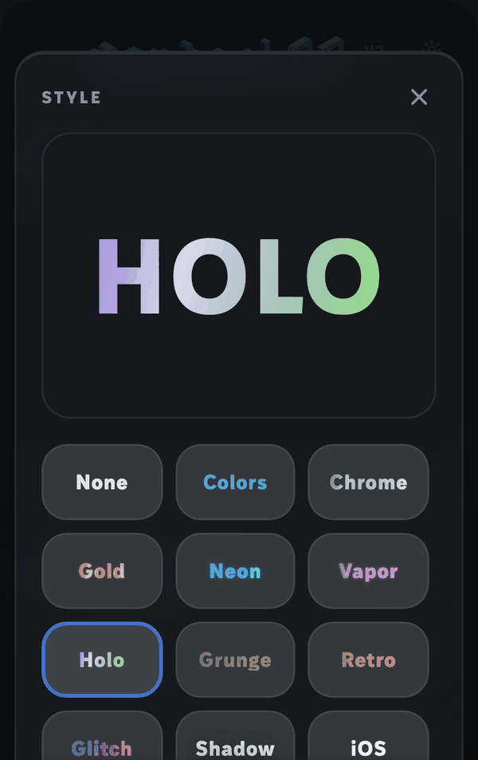
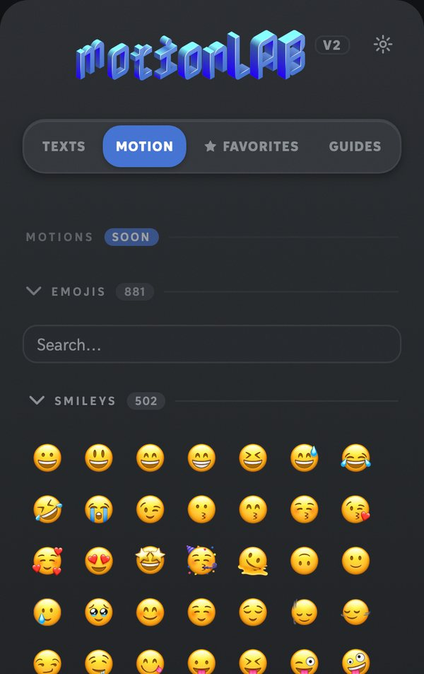
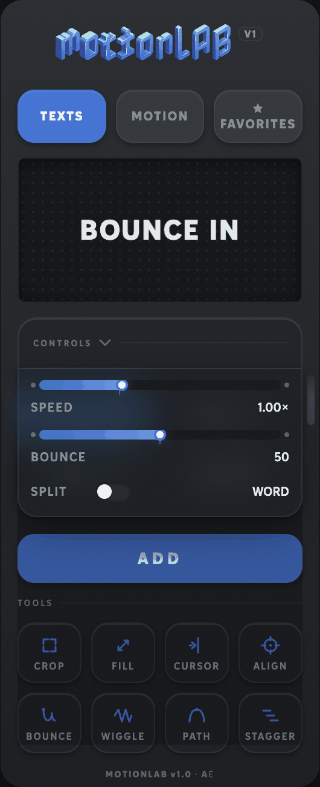

Onze animations de texte, 12 styles et 881 emojis animés, dix outils et les guides de cadrage des plateformes, dans un seul panel After Effects — les titres animés marchent aussi dans Premiere Pro.
Des styles pour habiller tes textes, 881 emojis animés, des animations qui entrent et qui sortent — et toujours un clic pour tout poser.

Style
12 styles d'habillage
Chrome, Gold, Neon, Holo, Glitch… Six curseurs règlent le grain, la texture, le balayage, le glow, la saccade et la teinte. Enregistre tes propres styles, retire-les en un clic.
Que des effets natifs d'After Effects : rien à installer en plus.

Emojis
881 emojis animés
La collection animée Noto de Google, rangée en 9 catégories, avec une recherche. Un clic : l'emoji est posé au playhead, avec son rebond d'entrée et de sortie, la boucle et l'arrêt sur image réglables dans les effets.
Chaque emoji se télécharge une fois, au premier usage (connexion requise), puis reste sur ton ordinateur.
Cible · In / Out
Lettre, mot ou ligne
Choisis ce qui s'anime : chaque lettre, chaque mot ou la ligne entière. Et décide si le texte entre, sort, ou les deux.
Presets
Morphing et Flicker
Une vague qui traverse le mot, un néon qui s'allume. Le Flicker s'ajoute aussi, en option, à n'importe quel preset.
Outils
Center et Del FX
Recentre un calque, vide sa pile d'effets. Dix outils en tout — et tu choisis les huit de ta barre.
V2 offerte si tu as déjà la V1 : re-télécharge le fichier depuis ton compte Podia. Styles, emojis, Cible, In / Out et outils : dans After Effects.
11 presets texte
Chaque animation, en un clic
Clique un preset, tape ton texte, choisis la cible et la vitesse — la preview joue en direct, exactement comme dans le panel.
MotionLAB
CIBLE : six presets s'animent au choix par lettre, par mot ou par ligne, avec un décalage réglable — dans After Effects. Dans Premiere Pro : lettre par lettre ou en bloc.
Inclus · Guides
Reste dans le cadre.
Les vraies interfaces Instagram, TikTok et YouTube posées sur ta comp en un clic — tu vois ce que les boutons cachent avant d'exporter.
L'onglet Guides
Un clic : l'interface de la plateforme s'importe en calque guide, calée au pixel sur ta comp 9:16 ou 16:9 — 1080p, 2K ou 4K. Elle n'apparaît jamais à l'export. Re-clic : elle disparaît.
Inclus depuis la V1.01.
Le système de favoris
Crée tes propres presets.
Règle un preset à ta main — vitesse, intensité, lettre, mot ou ligne — puis étoile-le : la combinaison devient un favori. Ton preset à toi. Tes styles perso s'y rangent aussi.
Tes favoris se rappellent en un clic, dans After Effects comme dans Premiere Pro — ta signature, prête à poser sur chaque montage.
Et sous le capot, les onze presets partagent le même moteur : tout ce que tu crées garde la même cohérence.

L'étoile sur chaque carte : ta combinaison, mémorisée.
Un panel, deux apps
After Effects et Premiere Pro
Un seul fichier à installer. Le panel détecte l'application et s'adapte : tout le panel dans After Effects, les titres animés dans Premiere Pro.
Ae
Dans After Effects
Clés natives, tout reste éditable
De vraies keyframes posées sur ton calque texte — tu retouches les courbes de vitesse comme d'habitude.
Réglages avant le clic : vitesse, intensité, lettre, mot ou ligne, entrée et sortie — l'animation est posée déjà calée.
Dix outils dans le panel : recadrage, remplissage, centrage, tête de lecture, alignement, rebond, wiggle, tracé, cascade et nettoyage des effets.
12 styles, 881 emojis animés et tes favoris, à portée de clic.
Tools
CROPFILLCURSORALIGNBOUNCEWIGGLEPATHSTAGGER
Pr
Dans Premiere Pro
Pilotage depuis Essential Graphics
Le clic ADD pose un titre animé directement sur ta timeline — pas d'aller-retour After Effects.
Texte, vitesse, intensité, lettre par lettre ou en bloc : tout se modifie après coup dans Essential Graphics.
9 des 11 presets dans Premiere. Morphing, Flicker, les styles, les emojis et les outils restent dans After Effects pour l'instant.
Essential GraphicsMotionLAB · Bounce In
Speed1.00
Bounce50
Letters
Stagger50 ms
Modifie le texte ou un réglage : le titre se rejoue avec tes valeurs.
La boîte à outils
Dix gestes qui reviennent tout le temps
Clique un geste : la scène montre ce qu'il fait à ta place.
Les outils travaillent sur les calques After Effects. Tu choisis les huit qui s'affichent dans ta barre.
«
Je refaisais les mêmes réglages en boucle — animations, textes, manipulations — montage après montage. MotionLAB, c'est ces gestes-là réduits à un clic, pour que ton temps aille à la création, plus jamais à la technique.
— Femz
Tout compris
Dans la boîte
39 €Paiement unique
Le panel MotionLAB pour After Effects et Premiere Pro — un seul fichier .zxp
11 presets texte, dont 6 animables par lettre, par mot ou par ligne
12 styles d'habillage du texte, et les tiens
881 emojis animés, posés en un clic
Entrée, sortie et Flicker sur chaque animation
10 outils d'animation, dans une barre que tu configures
4 guides de cadrage : les interfaces Instagram, TikTok, Shorts et YouTube 16:9 posées sur ta comp
Templates MOGRT intégrés, pilotés depuis Essential Graphics
Les Favoris : tes combinaisons preset + réglages, mémorisées dans le panel
Mises à jour gratuites à vie — la V2 est offerte si tu as la V1, et la bibliothèque MOTIONS arrivera de la même façon. Tu restes à jour, même si le prix augmente.
Développé et testé sur After Effects 2025 et 2026 et Premiere Pro 2025 (Mac). Un souci avec ta config ? Écris-moi, on regarde ensemble.
Installé en trois minutes
Télécharge ZXP Installer (gratuit, par aescripts) — c'est l'installeur standard des extensions Adobe.
Glisse le fichier .zxp (version Mac ou Windows) dans la fenêtre de ZXP Installer. C'est tout.
AePr
Relance After Effects ou Premiere Pro, puis ouvre Fenêtre → Extensions → MotionLAB. Le panel se docke où tu veux.
Bientôt · inclus
MOTIONS — une bibliothèque d'animations prêtes à poser (intros, cartes, éléments graphiques), à côté des emojis dans l'onglet Motion. Elle arrivera dans une mise à jour gratuite, pour tous les clients.
Questions fréquentes
Avant d'acheter
Ça marche vraiment dans les deux applications ?
Oui, c'est le même fichier .zxp. Dans After Effects, tout le panel est là et il pose de vraies keyframes. Dans Premiere Pro, il pose un titre animé sur la timeline (9 des 11 presets), modifiable dans Essential Graphics ; les styles, les emojis et les outils restent dans After Effects pour l'instant.
Quelles versions sont supportées ?
MotionLAB est développé et testé sur After Effects 2025 et 2026 et Premiere Pro 2025 (Mac). Si ta version pose problème, écris-moi — je regarde avec toi : hello@imfemz.com.
Je peux l'utiliser sur des projets clients ?
Oui. Projets clients, contenus monétisés : aucune restriction d'usage. La seule limite : ne pas revendre ni repartager le fichier lui-même.
Les emojis animés viennent de la collection Noto de Google, sous licence CC BY 4.0 : usage commercial permis, en créditant « Noto Emoji Animation — Google ».
Comment je reçois le plugin après l'achat ?
Immédiatement. Le paiement passe par Podia : tu télécharges le .zxp juste après l'achat, et tu peux le re-télécharger à tout moment depuis ton compte.
Comment je reçois les mises à jour ?
Toutes les mises à jour sont incluses : si tu as acheté la V1, la V2 est offerte. Tu re-télécharges le fichier depuis ton compte Podia et tu l'installes par-dessus.
Les emojis demandent une connexion ?
Oui, la première fois que tu poses un emoji : il se télécharge une seule fois depuis la collection Noto de Google, puis il reste sur ton ordinateur. Parcourir la grille ne télécharge rien.
Et si ça ne me convient pas ?
MotionLAB est un fichier numérique, il n'y a donc pas de remboursement automatique. Mais si quelque chose coince, écris-moi — on trouve une solution. Le détail est dans les CGV.